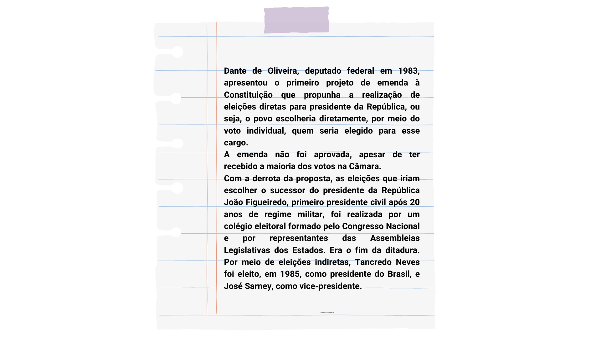
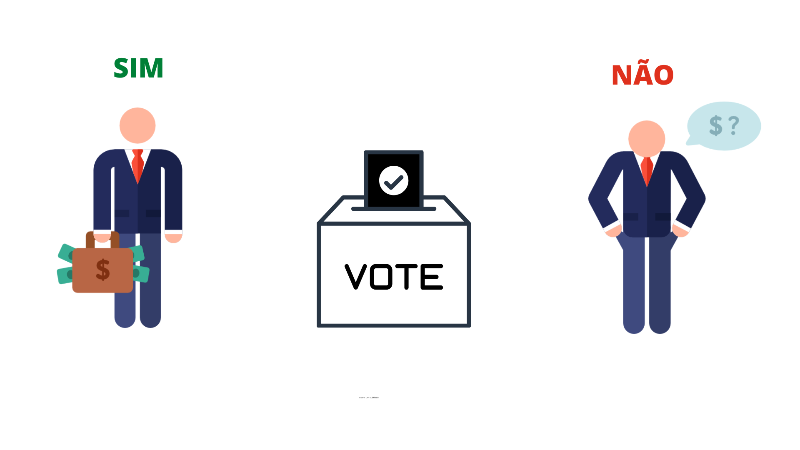
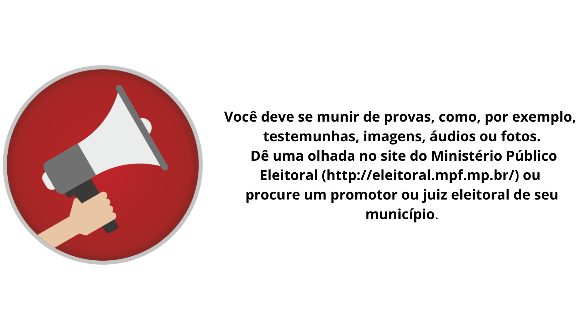

Você sabia?
A conquista do voto feminino no Brasil
O voto feminino no Brasil foi reconhecido em 1932 e incorporado à Constituição de 1934, mas era facultativo. Em 1965, tornou-se obrigatório, sendo equiparado ao dos homens
As mulheres brasileiras conquistaram o direito de votar em 24 de fevereiro de 1932, por meio do Decreto 21.076, do então presidente Getúlio Vargas, que instituiu o Código Eleitoral. Vargas chefiava o governo provisório desde o final de 1930, quando havia liderado um movimento civil-militar que depôs o presidente Washington Luís. Uma das bandeiras desse movimento (Revolução de 30) era a reforma eleitoral. O decreto também criou a Justiça Eleitoral e instituiu o voto secreto. Em 1933, houve eleição para a Assembleia Nacional Constituinte, e as mulheres puderam votar e ser votapela primeira vez. A Constituinte elaborou uma nova Constituição, que entrou em vigor em 19 consolidando o voto feminino – uma conquista do movimento feminista da época.
Voltar ao menuQuem pode votar?
Voltar ao menuQuem pode ser eleito?
Vocês sabiam que para se candidatar a um cargo eletivo é necessário ter uma idade mínima?

Além da idade mínima, os candidatos não podem ser analfabetos, estrangeiros e inalistáveis (impedidos dese alistar como eleitores). Apesar de não poderem concorrer, os maiores de 16 e menores de 18, já têmpoder de voto.
Voltar ao menuEleições indiretas
Embora no Brasil a tradição democrática tenha eleito dezenove presidentes, por oito ocasiões foram realizadas eleições indiretas desde a proclamação da República. Nas eleições indiretas, a população não possui direito ao voto. Os representantes são escolhidos por um colégio eleitoral, constituído por uma assembleia fechada.
Instalada a República, Marechal Deodoro da Fonseca, líder do movimento militar republicano, assumiuprovisoriamente a presidência da República e foi eleito presidente, pelo Congresso, em eleição indireta, realizada em 25 de fevereiro de 1891, pela Assembleia Constituinte. Foi, entretanto, no recente períododa Ditadura Militar, iniciado em 1964, que as eleições indiretas tornaram-se uma prática.
Pequena historia das eleições diretas
 Voltar ao menuVoto censitario
O Voto censitário era a concessão do direito do voto apenas àqueles cidadãos que possuíam certos critérios que comprovassem uma situação financeira satisfatória. Desse modo, os cidadãos eram classificados em ativos – que pagavam impostos- e passivos que tinham uma renda baixa. Apenas os ativos tinham o direito de votar. Na época colonial, só podiam votar (e ser votados) nobres, burocratas, militares, comerciantes ricos,senhores de engenho e homens de posses, mesmo analfabetos. Em 25 de março de 1824, D. Pedro I outorgou aprimeira Constituição brasileira e estabeleceu o voto censitário. O processo eleitoral seria realizado emdois turnos: eleições primárias, para a formação de um colégio eleitoral que, nas eleições secundárias,elegeria os senadores, deputados e membros do Conselho da Província. Só o alcaide-mor, espécie deprefeito, era indicado pelo rei. Hoje, diferente daquela época, o direito de voto é universal, independente de renda, raça ou religião, que é mais democrático. O voto no Brasil é obrigatório e um direito de todo cidadão brasileiro acima d16 anos.
 Voltar ao menuVoto eletronico
Na gestão do Ministro Carlos Velloso, em 1995, iniciou-se a informatização do voto. Um grupo de juristas e técnicos apresentaram um protótipo de urna eletrônica, dando início ao trabalho que contou com a colaboração de especialistas em informática, eletrônica e comunicações da Justiça Eleitoral, das Forças Armadas, do Ministério da Ciência e Tecnologia e do Ministério das Comunicações.

A primeira votação eletrônica no Brasil ocorreu em 1996, sob a presidência do Ministro Marco Aurélio Mendes de Farias Mello. Na época, um terço do eleitorado votou nas urnas eletrônicas. Nas eleições de 1998, votaram, eletronicamente, dois terços dos eleitores. Finalmente, no ano 2000, o projeto foi implementado em sua totalidade, ocasião em que todo eleitorado votou por meio eletrônico. Em 2006, votaram, eletronicamente, cerca de cento e vinte e cinco milhões de brasileiros.
Voltar ao menuCompra de votos
Apesar de proibida, a compra de votos é muito comum em todas as regiões do Brasil. Os candidatos, perto das eleições, oferecem cestas básicas, materiais de construção, dentaduras, óculos, passagens de ônibus, presentes, entre outros tantos benefícios. Infelizmente, isso acontece mais do que deveria e é nosso dever combater essa situação.
Cada brasileiro é responsável pelo seu voto. Quando opta por um candidato que compra votos, está elegendo um corrupto. Se ele faz isso antes de ocupar o cargo, imagina o que fará com seu dinheiro, o dinheiro público, após ser eleito?
Pense bem antes de votar, porque depois pode ser tarde demais. Se nosso dinheiro, ao invés de ser usadoem obras para a melhoria de instalações de hospitais, de saneamento básico ou de segurança, for desviado para interesse particular do político eleito, parte da responsabilidade será nossa.
Vamos ficar de olho!
Como denunciar crimes eleitorais
Se você tiver conhecimento de algum crime eleitoral, pode denunciar o fato. Você não precisa ter recebido qualquer benefício, basta que o candidato ou alguém que trabalhe para ele tenha lhe oferecido alguma vantagem em troca do seu voto.
Não tenha medo, sua identidade será mantida em sigilo, caso você queira assim.
Voltar ao menu